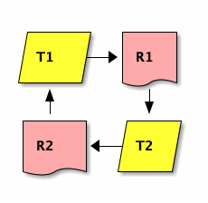

Deadlock
Dr Carey Pridgeon
Created: 2021-01-26 Tue 15:46
Deadlock
Deadlock
- What Deadlock is and how to avoid it.
- This occurs when two or more threads need more than one shared resource in order to complete a task.

- Unless access to these resources is strictly controlled by means of careful program design, deadlock can easily happen.
Preventative measures
- Condition Variables
- By introducing an extra layer of control, being imposing order of access rather than simply granting of access, Condition variables can go some way in prevention of deadlock.
- They can also, if used correctly, be used to release resources if held for too long without a complete set of requirements (all required resources) being met. This is complex to code, and not something we can cover.
Curative Measures
- Here we have two options
- Deadlock Breaking Algorithms
- These act after the system in question has been in a state of deadlock for a set period of time, typically numbered in milliseconds or less. It works by forcing all resource gathering threads to let go of all of their resources and start again. Essentially a soft reset.
- Redundant System
- The second option, cheaper and becoming more common as hardware gets cheaper, is to emplace a duplicate system, running in parallel and ready to take over if the first system locks up.
Obligatory XKCD

- Copyright: Randall Munroe
- Mirrored to avoid bandwidth stealing
- This Lecture is Licensed under Creative Commons Attribution-ShareAlike 4.0 International
- By Dr Carey Pridgeon Coventry University, UK, 2021